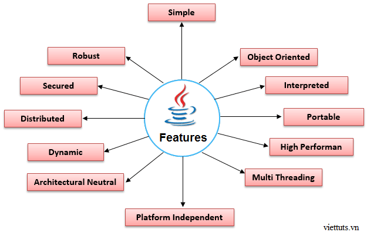

Java có rất nhiều tính năng nổi bật. Chúng được biết đến như những thuật ngữ quen thuộc. Các tính năng này đơn giản và dễ dàng để tìm hiểu. Dưới đây là danh sách các tính năng của java:
Nội dung chính
Ngôn ngữ Java có đặc điểm đơn giản là vì:
Hướng đối tượng nghĩa là chúng ta tổ chức phần mềm dưới dạng kết hợp của nhiều loại đối tượng khác nhau, trong đó có sự kết hợp chặt chẽ cả về dữ liệu và hành vi của chúng.
Lập trình hướng đối tượng (OOP) là một phương pháp làm đơn giản hóa việc phát triển và bảo trì phần mềm bằng việc cung cấp một số qui tắc.
Một số khái niệm cơ bản của hướng đối tượng (OOP) là:
Một Platform là môi trường phần cứng hoặc phần mềm mà một hoặc nhiều chương trình chạy trong đó. Có hai loại Platform, một loại dựa trên phần mềm (software-based) và một loại dựa trên phần cứng (hardware-based). Java cung cấp software-based platform. Java Platform khác với nhiều nền tảng khác ở chỗ nó chạy trên các nền tảng hardware-based khác nhau. Nó có hai thành phần:
Java code có thể chạy trên nhiều nền tảng như Windows, Linux, Sun Solaris, Mac/OS, ... Java code được biên dịch bởi Trình biên dịch (Compiler) và được chuyển đổi thành Bytecode. Bytecode này là một code độc lập nền tảng bởi vì nó có thể chạy trên nhiều nền tảng khác nhau. Đó là lý do vì sao java có khẩu hiệu "Viết một lần, Chạy khắp nơi (Write Once and Run Anywhere)".
Java bảo mật bởi vì:
Những tính năng bảo mật này được cung cấp bởi Ngôn ngữ Java. Ngoài ra, một vài tính năng bảo mật khác được cung cấp thông qua nhà phát triển như SSL,JAAS,cryptography, ...
Bạn có thể hiểu đơn giản Robust nghĩa là mạnh mẽ. Java sử dụng trình quản lý bộ nhớ mạnh mẽ. Đó là, Java sử dụng ít con trỏ hơn để tránh các vấn đề liên quan tới bảo mật. Bên cạnh đó Java còn có Trình dọn rác tự động (Garbage Collection). Có xử lý ngoại lệ (Exception Handling) và cơ chế kiểm tra kiểu ngoại lệ xảy ra. Đó là những điểm nổi bật khiếm cho Java mạnh mẽ!
Một ứng dụng được biên dịch trên kiến trúc phần cứng này và ứng dụng đó chạy được trên tất cả các kiến trúc phần cứng khác. vd: Một ứng dụng được biên dịch với vi xử lý 32bit và nó sẽ chạy tốt trên vi xử lý 64bit.
Chúng ta có thể tạo các ứng dụng phân tán trong Java. RMI và EJB được sử dụng để tạo các ứng dụng này. Chúng ta có thể truy cập các file bằng việc gọi các phương thức từ bất cứ thiết bị nào trên internet.
Một Thread là giống như một chương trình riêng rẽ, thực thi một cách đồng thời. Chúng ta có thể viết các chương trình Java mà xử lý nhiều tác vụ cùng một lúc bằng việc định nghĩa nhiều Thread. Lợi thế chính của Multi-thread là nó chia sẻ cùng bộ nhớ. Các Thread là quan trọng cho Multi-media, Web App, ...